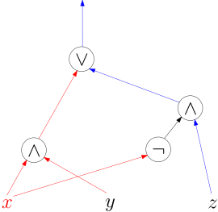

2. Boolesche Schaltkreise (nicht im Sommersemester 2025)./course1/wly/02/__parent.wly:2:11
2. Boolesche Schaltkreise (nicht im Sommersemester 2025)./course1/wly/02/__parent.wly:2:11
Boolesche Schaltkreise sind ein idealisiertes Modell./course1/wly/02/__parent.wly:4:5
echter elektronischer Schaltkreise. Als primitive Bausteine./course1/wly/02/__parent.wly:5:5
haben wir Boolesche Operatoren, auch
./course1/wly/02/__parent.wly:6:5Gatter./course1/wly/02/__parent.wly:6:43
(englisch./course1/wly/02/__parent.wly:6:50
./course1/wly/02/__parent.wly:7:5gates./course1/wly/02/__parent.wly:7:6)./course1/wly/02/__parent.wly:7:12
genannt, die mehrere (typischerweise ein oder./course1/wly/02/__parent.wly:7:12
zwei) Signale zu einem Ausgabe-Signal kombinieren. Die./course1/wly/02/__parent.wly:8:5
Signale können nur zwei Werte annehmen: wahr/falsch bzw../course1/wly/02/__parent.wly:9:5
1/0 bzw.
./course1/wly/02/__parent.wly:10:5true/false./course1/wly/02/__parent.wly:10:15../course1/wly/02/__parent.wly:10:26
Hier sehen Sie die drei üblichsten./course1/wly/02/__parent.wly:10:26
Gatter:./course1/wly/02/__parent.wly:11:5
Von links nach rechts sind dies: das Und-Gatter./course1/wly/02/__parent.wly:18:5
./course1/wly/02/__parent.wly:19:5(./course1/wly/02/__parent.wly:19:5and-gate./course1/wly/02/__parent.wly:19:7),./course1/wly/02/__parent.wly:19:16
Oder-Gatter
./course1/wly/02/__parent.wly:19:16(./course1/wly/02/__parent.wly:19:16or-gate./course1/wly/02/__parent.wly:19:33)./course1/wly/02/__parent.wly:19:41
und das Nicht-Gatter./course1/wly/02/__parent.wly:19:41
./course1/wly/02/__parent.wly:20:5(./course1/wly/02/__parent.wly:20:5not-gate./course1/wly/02/__parent.wly:20:7)../course1/wly/02/__parent.wly:20:16
In C, C++ und Java kennen Sie diese./course1/wly/02/__parent.wly:20:16
Booleschen Operatoren als
./course1/wly/02/__parent.wly:21:5&&./course1/wly/02/__parent.wly:21:32,./course1/wly/02/__parent.wly:21:35
./course1/wly/02/__parent.wly:21:35||./course1/wly/02/__parent.wly:21:38
und
./course1/wly/02/__parent.wly:21:41!./course1/wly/02/__parent.wly:21:47../course1/wly/02/__parent.wly:21:49
Was diese./course1/wly/02/__parent.wly:21:49
Operatoren
./course1/wly/02/__parent.wly:22:5tun./course1/wly/02/__parent.wly:22:17,./course1/wly/02/__parent.wly:22:21
können wir als
./course1/wly/02/__parent.wly:22:21Wahrheitstabelle./course1/wly/02/__parent.wly:22:39
./course1/wly/02/__parent.wly:22:56
darstellen. Wir listen alle Kombinationen für
./course1/wly/02/__parent.wly:23:5$x,y$./course1/wly/02/__parent.wly:23:51
auf./course1/wly/02/__parent.wly:23:56
und schreiben in jede Zeile auch den Wert, den der Operator./course1/wly/02/__parent.wly:24:5
ausgibt../course1/wly/02/__parent.wly:25:5
Die dritte Zeile der mittleren Tabelle sagt beispielsweise./course1/wly/02/__parent.wly:51:5 aus, dass ./course1/wly/02/__parent.wly:52:5$1 \vee 0 = 1$./course1/wly/02/__parent.wly:52:15 gilt. Vielleicht wünschen Sie./course1/wly/02/__parent.wly:52:29 sich noch mehr Gates, zum Beispiel ein if-then-else-Gate./course1/wly/02/__parent.wly:53:5 mit drei Inputs ./course1/wly/02/__parent.wly:54:5$x,y,z$./course1/wly/02/__parent.wly:54:21,./course1/wly/02/__parent.wly:54:28 welches ./course1/wly/02/__parent.wly:54:28$y$./course1/wly/02/__parent.wly:54:38 ausgibt, wenn ./course1/wly/02/__parent.wly:54:41$x$./course1/wly/02/__parent.wly:54:56 ./course1/wly/02/__parent.wly:54:59 wahr ist und ansonsten ./course1/wly/02/__parent.wly:55:5$z$./course1/wly/02/__parent.wly:55:28 ausgibt. So ein Gate können Sie./course1/wly/02/__parent.wly:55:31 sich einfach aus And, Or, Not bauen:./course1/wly/02/__parent.wly:56:5
if./course1/wly/02/__parent.wly:63:14
./course1/wly/02/__parent.wly:63:17$x$./course1/wly/02/__parent.wly:63:18
./course1/wly/02/__parent.wly:63:21then./course1/wly/02/__parent.wly:63:23
./course1/wly/02/__parent.wly:63:28$y$./course1/wly/02/__parent.wly:63:29
./course1/wly/02/__parent.wly:63:32else./course1/wly/02/__parent.wly:63:34
./course1/wly/02/__parent.wly:63:39$z$./course1/wly/02/__parent.wly:63:40
Jeder Schaltkreis ./course1/wly/02/__parent.wly:65:5berechnet./course1/wly/02/__parent.wly:65:24 eine Funktion (formale./course1/wly/02/__parent.wly:65:34 Definition weiter unten). Informell gesprochen, wenn wir./course1/wly/02/__parent.wly:66:5 Wahrheitswerte (0/1) in die Input-Gates reinstecken, dann./course1/wly/02/__parent.wly:67:5 fließen diese durch den Schaltkreis und werden von den./course1/wly/02/__parent.wly:68:5 AND/OR/NOT-Gates entsprechend ihrer Funktion kombiniert und./course1/wly/02/__parent.wly:69:5 werden schließlich an den Output-Gates ausgegeben:./course1/wly/02/__parent.wly:70:5

course1/public/img/circuits/if-then-else-gate-with-values.svgÜbungsaufgabe 2.1./course1/wly/02/__parent.wly:80:5 ./course1/wly/02/__parent.wly:80:5 Bauen Sie folgende Gates aus And-, Or- und Not-Gates./course1/wly/02/__parent.wly:81:9 zusammen:./course1/wly/02/__parent.wly:82:9
Ein XOR-Gate ./course1/wly/02/__parent.wly:86:17$x \oplus y$./course1/wly/02/__parent.wly:86:30../course1/wly/02/__parent.wly:86:42 Es gibt 1 aus, wenn einer der./course1/wly/02/__parent.wly:86:42 beiden Inputs 1 ist und der andere 0../course1/wly/02/__parent.wly:87:17
Ein Majority-Gate ./course1/wly/02/__parent.wly:90:17$Maj(x,y,z)$./course1/wly/02/__parent.wly:90:35../course1/wly/02/__parent.wly:90:47 Es gibt 1 aus, wenn./course1/wly/02/__parent.wly:90:47 mindestens zwei seiner Inputs 1 ist../course1/wly/02/__parent.wly:91:17
Ein ./course1/wly/02/__parent.wly:94:17$n$./course1/wly/02/__parent.wly:94:21-faches./course1/wly/02/__parent.wly:94:24 XOR-Gate./course1/wly/02/__parent.wly:94:24
welches 1 ausgibt, wenn eine ungerade Anzahl seiner Inputs./course1/wly/02/__parent.wly:101:17 auf 1 stehen../course1/wly/02/__parent.wly:102:17
Ein ./course1/wly/02/__parent.wly:105:17$n$./course1/wly/02/__parent.wly:105:21-faches./course1/wly/02/__parent.wly:105:24 Majority-Gate./course1/wly/02/__parent.wly:105:24 ./course1/wly/02/__parent.wly:106:17$\mathrm{Maj}(x_1,\ldots,x_n)$./course1/wly/02/__parent.wly:106:17,./course1/wly/02/__parent.wly:106:47 welches 1 ausgibt, wenn./course1/wly/02/__parent.wly:106:47 mehr als ./course1/wly/02/__parent.wly:107:17$n/2$./course1/wly/02/__parent.wly:107:26 der Inputs auf 1 stehen. Sie können./course1/wly/02/__parent.wly:107:31 annehmen, dass ./course1/wly/02/__parent.wly:108:17$n$./course1/wly/02/__parent.wly:108:32 ungerade ist, wenn es Ihnen hilft../course1/wly/02/__parent.wly:108:35 Können Sie vermeiden, dass Ihr Schaltkreis riesengroß wird?./course1/wly/02/__parent.wly:109:17 Kriegen Sie beispielsweise für einen Schaltkreis hin, den./course1/wly/02/__parent.wly:110:17 man realistischerweise herstellen kann?./course1/wly/02/__parent.wly:111:17
Je nach Kontext kann es hilfreich sein, Gatter mit./course1/wly/02/__parent.wly:113:5 beliebig vielen Inputs zuzulassen, beispielsweise./course1/wly/02/__parent.wly:114:5 ./course1/wly/02/__parent.wly:115:5$x_1 \land x_2 \land \ldots \land x_n$./course1/wly/02/__parent.wly:115:5 als ein Gate./course1/wly/02/__parent.wly:115:43 darzustellen:./course1/wly/02/__parent.wly:116:5
Man bezeichnet dies als AND-Gate mit einem Fan-in von ./course1/wly/02/__parent.wly:123:5$n$./course1/wly/02/__parent.wly:123:59../course1/wly/02/__parent.wly:123:62 ./course1/wly/02/__parent.wly:123:62 Das "normale" AND-Gate hat einen Fan-in von 2. Mit ./course1/wly/02/__parent.wly:124:5$\lor$./course1/wly/02/__parent.wly:124:56-./course1/wly/02/__parent.wly:124:62 ./course1/wly/02/__parent.wly:124:62 und ./course1/wly/02/__parent.wly:125:5$\oplus$./course1/wly/02/__parent.wly:125:9-Gates./course1/wly/02/__parent.wly:125:17 geht das ganz analog. Für andere Gates./course1/wly/02/__parent.wly:125:17 (wie zum Beispiel ein if-then-else-Gate) würde das keinen./course1/wly/02/__parent.wly:126:5 Sinn machen. Größerer Fan-in ist aber nicht wirklich etwas./course1/wly/02/__parent.wly:127:5 neues unter der Sonne: Sie können jederzeit großen Fan-in./course1/wly/02/__parent.wly:128:5 durch kleinen simulieren:./course1/wly/02/__parent.wly:129:5
Also als geschachteltes AND, oder aber in Form eines./course1/wly/02/__parent.wly:136:5 Binärbaums:./course1/wly/02/__parent.wly:137:5
Schaltkreise, wie wir sie in diesem Kapitel betrachten,./course1/wly/02/__parent.wly:144:5 sind immer azyklisch. Das heißt insbesondere, das Dinge mit./course1/wly/02/__parent.wly:145:5 "Feedback-Schleifen" wie Flipflops eben keine Schaltkreis./course1/wly/02/__parent.wly:146:5 in unserem Sinn sind:./course1/wly/02/__parent.wly:147:5
Das Flipflop zeigt ein interessantes Verhalten: wenn./course1/wly/02/__parent.wly:154:5 ./course1/wly/02/__parent.wly:155:5$\text{Reset} = 0$./course1/wly/02/__parent.wly:155:5,./course1/wly/02/__parent.wly:155:23 ./course1/wly/02/__parent.wly:155:23$\text{Set} = 1$./course1/wly/02/__parent.wly:155:25 ist, so ist der./course1/wly/02/__parent.wly:155:41 Ausgabe-Wert des unteren OR-Gates auf jeden Fall 1, und./course1/wly/02/__parent.wly:156:5 somit ist ./course1/wly/02/__parent.wly:157:5$\bar{Q} = 0$./course1/wly/02/__parent.wly:157:15;./course1/wly/02/__parent.wly:157:28 somit sind wiederum beide./course1/wly/02/__parent.wly:157:28 Input-Werte des oberen OR-Gates 0 und ./course1/wly/02/__parent.wly:158:5$Q = 1$./course1/wly/02/__parent.wly:158:43../course1/wly/02/__parent.wly:158:50 Wenn./course1/wly/02/__parent.wly:158:50 ./course1/wly/02/__parent.wly:159:5$\text{Reset} = 1$./course1/wly/02/__parent.wly:159:5,./course1/wly/02/__parent.wly:159:23 ./course1/wly/02/__parent.wly:159:23$\text{Set} = 0$./course1/wly/02/__parent.wly:159:25,./course1/wly/02/__parent.wly:159:41 dann ist analog./course1/wly/02/__parent.wly:159:41 ./course1/wly/02/__parent.wly:160:5$Q = 0$./course1/wly/02/__parent.wly:160:5,./course1/wly/02/__parent.wly:160:12 ./course1/wly/02/__parent.wly:160:12$\bar{Q} = 1$./course1/wly/02/__parent.wly:160:14../course1/wly/02/__parent.wly:160:27 Wenn./course1/wly/02/__parent.wly:160:27 ./course1/wly/02/__parent.wly:161:5$\text{Reset} = \text{Set} = 0$./course1/wly/02/__parent.wly:161:5,./course1/wly/02/__parent.wly:161:36 dann leiten beide./course1/wly/02/__parent.wly:161:36 OR-Gates einfach die Werte der anderen, von rechts./course1/wly/02/__parent.wly:162:5 kommenden Kabel durch, und somit gilt ./course1/wly/02/__parent.wly:163:5$Q = \neg{\bar{Q}}$./course1/wly/02/__parent.wly:163:43 ./course1/wly/02/__parent.wly:163:62 und ./course1/wly/02/__parent.wly:164:5$\bar{Q} = \neg{Q}$./course1/wly/02/__parent.wly:164:9;./course1/wly/02/__parent.wly:164:28 das heißt, die Werte, die zuvor./course1/wly/02/__parent.wly:164:28 bestanden, bestehen weiter. Das Flipflop implementiert./course1/wly/02/__parent.wly:165:5 somit einen 1-Bit-Speicher (die Kombination./course1/wly/02/__parent.wly:166:5 ./course1/wly/02/__parent.wly:167:5$\text{Set} = \text{Reset} = 1$./course1/wly/02/__parent.wly:167:5 würde ./course1/wly/02/__parent.wly:167:36$Q = \bar{Q} = 0$./course1/wly/02/__parent.wly:167:43 ./course1/wly/02/__parent.wly:167:60 erzeugen und gilt als illegale Eingabe). Ein Flipflop hat./course1/wly/02/__parent.wly:168:5 somit einen inneren Zustand. Die Schaltkreise in diesem./course1/wly/02/__parent.wly:169:5 Kapitel haben keinen inneren Zustand: die Werte der./course1/wly/02/__parent.wly:170:5 Ausgabe-Gates sind vollständig durch die Werte der./course1/wly/02/__parent.wly:171:5 Input-Gates determiniert. Wir sind nun bereit für eine./course1/wly/02/__parent.wly:172:5 formale Definition von Schaltkreisen../course1/wly/02/__parent.wly:173:5
Definition 2.1 (Boolesche Schaltkreise)./course1/wly/02/__parent.wly:175:5 Ein Boolescher Schaltkreis ist./course1/wly/02/__parent.wly:176:35 ein gerichteter, azyklischer Graph (englisch directed./course1/wly/02/__parent.wly:177:9 acyclic graph, kurz DAG), in welchem jeder Knoten entweder./course1/wly/02/__parent.wly:178:9
ein Input-Gate ist und mit einer Input-Variable oder eine./course1/wly/02/__parent.wly:182:17 Booleschen Konstant (0 oder 1) beschriftet ist und keine./course1/wly/02/__parent.wly:183:17 eingehenden Kanten hat (in-degree 0), oder./course1/wly/02/__parent.wly:184:17
mit AND-, OR- oder NOT beschriftet ist,./course1/wly/02/__parent.wly:187:17
wobei die mit NOT beschrifteten Knoten genau eine./course1/wly/02/__parent.wly:189:9 eingehende Kante haben und die mit AND oder OR./course1/wly/02/__parent.wly:190:9 beschrifteten Knoten mindestens zwei eingehende Kanten./course1/wly/02/__parent.wly:191:9 haben. Mindestens ein Knoten ist als Output-Gate./course1/wly/02/__parent.wly:192:9 gekennzeichnet. Die Output-Gates sind ihrerseits mit./course1/wly/02/__parent.wly:193:9 Output-Variablen ./course1/wly/02/__parent.wly:194:9$y_1, \ldots, y_m$./course1/wly/02/__parent.wly:194:26 beschriftet../course1/wly/02/__parent.wly:194:44
Oft haben wir es mit Schaltkreisen mit nur einem./course1/wly/02/__parent.wly:196:5 Output-Gate zu tun; in diesem Falle lassen wir die./course1/wly/02/__parent.wly:197:5 Beschriftung auch gerne weg, weil sie keine zusätzliche./course1/wly/02/__parent.wly:198:5 Information bringt. Wenn wir allen Input-Variablen eines./course1/wly/02/__parent.wly:199:5 Schaltkreises ./course1/wly/02/__parent.wly:200:5$C$./course1/wly/02/__parent.wly:200:19 einen Wahrheitswert zugewiesen bekommen./course1/wly/02/__parent.wly:200:22 haben, dann können wir den Schaltkreis von "unten"./course1/wly/02/__parent.wly:201:5 (Input-Gates) nach "oben" (Output-Gates) auswerten, indem./course1/wly/02/__parent.wly:202:5 eben jeder mit OR/AND/NOT beschriftete Knoten den ihm./course1/wly/02/__parent.wly:203:5 zugeordnete Booleschen Operator auswertet. Es ist klar,./course1/wly/02/__parent.wly:204:5 dass der Schaltkreis ./course1/wly/02/__parent.wly:205:5$C$./course1/wly/02/__parent.wly:205:26 eine ./course1/wly/02/__parent.wly:205:29Funktion./course1/wly/02/__parent.wly:205:36 ./course1/wly/02/__parent.wly:205:45 ./course1/wly/02/__parent.wly:206:5$f_C : \{0,1\}^n \to \{0,1\}^m$./course1/wly/02/__parent.wly:206:5 berechnet. Oft schreiben./course1/wly/02/__parent.wly:206:36 wir einfach ./course1/wly/02/__parent.wly:207:5$C : \{0,1\}^n \to \{0,1\}^m$./course1/wly/02/__parent.wly:207:17../course1/wly/02/__parent.wly:207:46
Beobachtung 2.2./course1/wly/02/__parent.wly:209:5 ./course1/wly/02/__parent.wly:209:5 Ein Schaltkreis ./course1/wly/02/__parent.wly:210:9$C$./course1/wly/02/__parent.wly:210:25 mit ./course1/wly/02/__parent.wly:210:28$n$./course1/wly/02/__parent.wly:210:33 Input-Gates und ./course1/wly/02/__parent.wly:210:36$m$./course1/wly/02/__parent.wly:210:53 ./course1/wly/02/__parent.wly:210:56 Output-Gates berechnet eine Funktion./course1/wly/02/__parent.wly:211:9 ./course1/wly/02/__parent.wly:212:9$f_C : \{0,1\}^n \to \{0,1\}^m$./course1/wly/02/__parent.wly:212:9
Es ist auch nicht weiter überraschend, dass es./course1/wly/02/__parent.wly:214:5 Schaltkreise für die gleiche Funktion geben kann (sie haben./course1/wly/02/__parent.wly:215:5 für die Funktion ./course1/wly/02/__parent.wly:216:5$x_1 \land \ldots \land x_n$./course1/wly/02/__parent.wly:216:22 auch bereits./course1/wly/02/__parent.wly:216:50 drei verschiedene Schaltkreise gesehen, und im Rahmen der./course1/wly/02/__parent.wly:217:5 obigen Übungsaufgabe wohl auch mehrere Schaltkreise, die./course1/wly/02/__parent.wly:218:5 das gleiche tun, entwickelt../course1/wly/02/__parent.wly:219:5
Definition 2.3./course1/wly/02/__parent.wly:221:5 ./course1/wly/02/__parent.wly:221:5 Zwei Boolesche Schaltkreise ./course1/wly/02/__parent.wly:222:9$C, C^{\prime}$./course1/wly/02/__parent.wly:222:37 heißen./course1/wly/02/__parent.wly:222:52 äquivalent, wenn ./course1/wly/02/__parent.wly:223:9$f_C = f_{C^{\prime}}$./course1/wly/02/__parent.wly:223:26,./course1/wly/02/__parent.wly:223:48 wenn sie also die./course1/wly/02/__parent.wly:223:48 gleiche Funktion berechnen. Wir schreiben./course1/wly/02/__parent.wly:224:9 ./course1/wly/02/__parent.wly:225:9$C \equiv C^{\prime}$./course1/wly/02/__parent.wly:225:9../course1/wly/02/__parent.wly:225:30